import numpy as np
import pandas as pd
import matplotlib.pyplot as plt
import seaborn as sns
import os
Summary
sns.distplot(np.log(df['price']), bins = 20, hist_kws=dict(edgecolor="k", linewidth=2)) # Histogram
sns.countplot(x='color', data=df) # Barplot, sort order with np.sort(df['color'].unique())
sns.countplot(x='cut', data=df, hue='color') # Barplot with groupby cut, split by color
sns.boxplot(data = df, y = 'carat', x = 'clarity', hue = 'cut') # Boxplot
sns.scatterplot(data = df, x = 'carat', y = 'price', hue = 'cut', alpha = .8, edgecolor = 'None') # Scatterplot
sns.pairplot(data = df[['table', 'price', 'x', 'y', 'color']], hue = 'color') # Pairplot
plt.plot(x,y) # Lineplot
sns.lineplot(data=df, x = 'price', y = 'carat') #Lineplot Seaborn
sns.lmplot(data=df, x = 'price', y = 'carat') # Linear model with conf line
sns.heatmap(data = df.corr(), annot=True) #Heatmap, corr() automatically takes all the numerical variables
sns.heatmap(flights, annot=True, fmt="d") #Heatmap for a entire numerical dataframe
You can superimpose graphs on top of each other if they are in the same cell and use the same x and y variables. eg you can combine a scatterplot with a line graph.
Save the graphic file
plt.figure(figsize = (10,6), dpi = 350) # set the size and DPI for saving if needed
plt.savefig('test2.png') # add 'transparent=True' for png
# Load dataset
# sns.get_dataset_names()
df = sns.load_dataset('diamonds')
df.head()
| carat | cut | color | clarity | depth | table | price | x | y | z | |
|---|---|---|---|---|---|---|---|---|---|---|
| 0 | 0.23 | Ideal | E | SI2 | 61.5 | 55.0 | 326 | 3.95 | 3.98 | 2.43 |
| 1 | 0.21 | Premium | E | SI1 | 59.8 | 61.0 | 326 | 3.89 | 3.84 | 2.31 |
| 2 | 0.23 | Good | E | VS1 | 56.9 | 65.0 | 327 | 4.05 | 4.07 | 2.31 |
| 3 | 0.29 | Premium | I | VS2 | 62.4 | 58.0 | 334 | 4.20 | 4.23 | 2.63 |
| 4 | 0.31 | Good | J | SI2 | 63.3 | 58.0 | 335 | 4.34 | 4.35 | 2.75 |
Manage axis
plt.rcParams["axes.labelsize"] = 16 # Set the fontsize of the axis title
# Assigning a plot to a variable 'ax' has no effect, except that varying the parameters
# for the plot becomes easier by referencing the variable.
ax = sns.distplot(np.log(df['price']), bins = 20, hist_kws=dict(edgecolor="k", linewidth=2))
# Set axis limits
plt.xlim(6,10) # Hardcode, or set to 'None' for automatic setting
plt.ylim(None,None)
# Controlling ticks
xmin, xmax = ax.get_xlim() # Can also be ylim
custom_ticks = np.linspace(xmin, xmax, 10) #Pick how many ticks in the linear spacing
# custom_ticks = np.linspace(xmin, xmax, 10, dtype=int) # Use this line for integer ticks
ax.set_xticks(custom_ticks)
ax.set_xticklabels(np.round(custom_ticks,2)) #limit x-axis label to 2 decimal places
for label in ax.get_xticklabels(): #rotate all labels by 90 degrees
label.set_rotation(90) # Note it is being done individually for each label by a loop
ax.tick_params(axis="x", labelsize=8) #set fontsize for tick labels
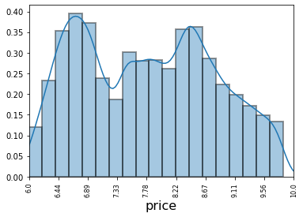
Detailed examples
#plt.figure(figsize = (10,6), dpi = 350) # set the size and DPI for saving if needed
# Histogram with edge for the bars, and a density plot (KDE, kernel density estimate)
# You can turn off the kde or the histogram, or add a rug.
# kws means keywords, and kwargs means keyword arguments
# Adding colors based on colormaps using the palette argument:
# https://matplotlib.org/3.1.0/tutorials/colors/colormaps.html
sns.distplot(np.log(df['price']), bins = 20, hist_kws=dict(edgecolor="k", linewidth=2))
# Labeling
plt.title('Title')
plt.xlabel('X Label')
plt.ylabel('Y Label')
# Axis and ticks
plt.xlim(None,None) # Hardcode, or set to 'None' for automatic setting
plt.ylim(None,None)
# Save the graphic file from this cell. Can also add 'transparent=True' for png
plt.savefig('test2.png')
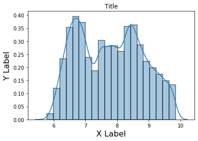
# Barplot for categorical variables
sns.countplot(x='color', data=df, order = np.sort(df['color'].unique()) )
# or sns.countplot(df['sex'])
<matplotlib.axes._subplots.AxesSubplot at 0x289cfcc4e08>
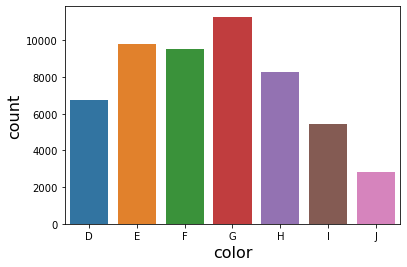
# Barplot with two variables
sns.countplot(x='cut', data=df, hue='color');
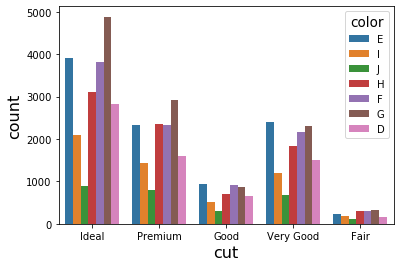
"""
For a basic boxplot, you only need one variable. You can call it either x or y variable.
You get one boxplot from this, either along the x-axis or the y-axis. Don't select a
categorical variable for a boxplot, only a continuous one so there is something to show.
Preferably put the continuous variable along the y-axis.
You can then do a sort of 'group-by' by adding an x-variable which should be categorical,
and the categories will then show on the x-axis. You can further break down the boxplot
by adding 'hue' as equal to another categorical variable.
"""
plt.figure(figsize = (12,8))
sns.boxplot(data = df, y = 'carat', x = 'clarity', hue = 'cut')
<matplotlib.axes._subplots.AxesSubplot at 0x289d092aa88>
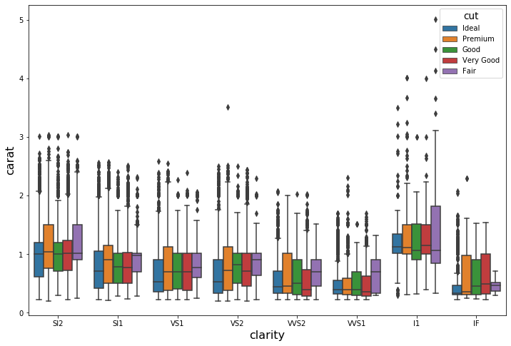
# Scatterplots are pretty self-explanatory.
plt.figure(figsize = (12,8))
sns.scatterplot(data = df, x = 'carat', y = 'price', hue = 'cut', alpha = .8, edgecolor = 'None')
# edgecolor takes out all the whiteness by too many datapoints with a white border on top of each other.
# sns.lineplot(data = df, x = 'price', y = 'table')
<matplotlib.axes._subplots.AxesSubplot at 0x289d0d9f688>
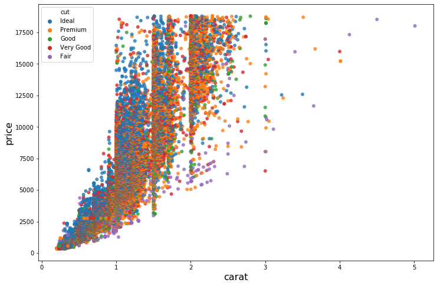
# Pairplots are simple, subset the right columns first. If using hue, make sure
# it is there in the data.
sns.pairplot(data = df[['table', 'price', 'x', 'y', 'color']], hue = 'color')
<seaborn.axisgrid.PairGrid at 0x289d12235c8>
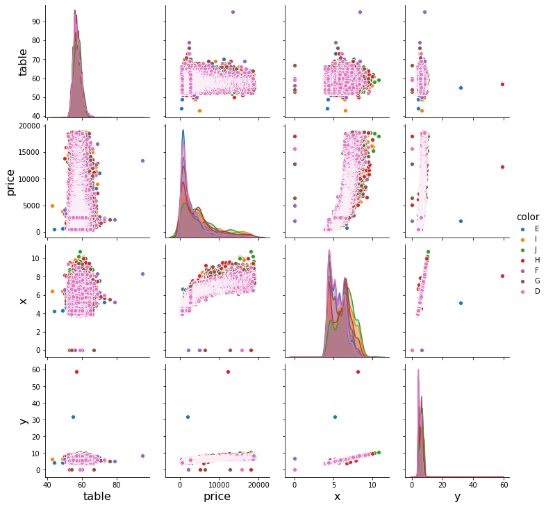
df
| carat | cut | color | clarity | depth | table | price | x | y | z | |
|---|---|---|---|---|---|---|---|---|---|---|
| 0 | 0.23 | Ideal | E | SI2 | 61.5 | 55.0 | 326 | 3.95 | 3.98 | 2.43 |
| 1 | 0.21 | Premium | E | SI1 | 59.8 | 61.0 | 326 | 3.89 | 3.84 | 2.31 |
| 2 | 0.23 | Good | E | VS1 | 56.9 | 65.0 | 327 | 4.05 | 4.07 | 2.31 |
| 3 | 0.29 | Premium | I | VS2 | 62.4 | 58.0 | 334 | 4.20 | 4.23 | 2.63 |
| 4 | 0.31 | Good | J | SI2 | 63.3 | 58.0 | 335 | 4.34 | 4.35 | 2.75 |
| ... | ... | ... | ... | ... | ... | ... | ... | ... | ... | ... |
| 53935 | 0.72 | Ideal | D | SI1 | 60.8 | 57.0 | 2757 | 5.75 | 5.76 | 3.50 |
| 53936 | 0.72 | Good | D | SI1 | 63.1 | 55.0 | 2757 | 5.69 | 5.75 | 3.61 |
| 53937 | 0.70 | Very Good | D | SI1 | 62.8 | 60.0 | 2757 | 5.66 | 5.68 | 3.56 |
| 53938 | 0.86 | Premium | H | SI2 | 61.0 | 58.0 | 2757 | 6.15 | 6.12 | 3.74 |
| 53939 | 0.75 | Ideal | D | SI2 | 62.2 | 55.0 | 2757 | 5.83 | 5.87 | 3.64 |
53940 rows × 10 columns
sns.lineplot(data=df, x = 'price', y = 'carat')
<matplotlib.axes._subplots.AxesSubplot at 0x289d1a395c8>
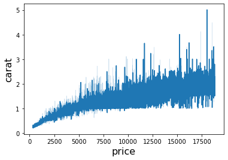
sns.lmplot(x='carat', y='price', data=df) # Linear model with conf line
<seaborn.axisgrid.FacetGrid at 0x289d4eaa748>
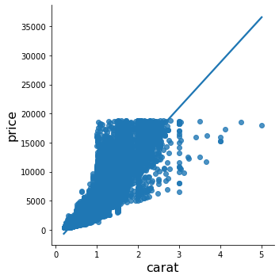
# First get correlation matrix using 'df.corr' then pass that to sns.heatmap
#sns.heatmap(data = df[['table', 'price', 'carat', 'x', 'y', 'z', 'color']].corr(), annot=True)
sns.heatmap(data = df.corr(), annot=True) #corr() automatically takes all the numerical variables
<matplotlib.axes._subplots.AxesSubplot at 0x289d4f52cc8>
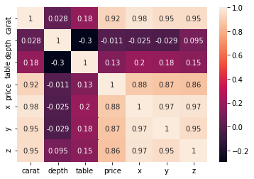
data = df[['table', 'price', 'x', 'y', 'color']]
data.corr()
| table | price | x | y | |
|---|---|---|---|---|
| table | 1.000000 | 0.127134 | 0.195344 | 0.183760 |
| price | 0.127134 | 1.000000 | 0.884435 | 0.865421 |
| x | 0.195344 | 0.884435 | 1.000000 | 0.974701 |
| y | 0.183760 | 0.865421 | 0.974701 | 1.000000 |
flights_long = sns.load_dataset("flights")
flights = flights_long.pivot("month", "year", "passengers")
flights
| year | 1949 | 1950 | 1951 | 1952 | 1953 | 1954 | 1955 | 1956 | 1957 | 1958 | 1959 | 1960 |
|---|---|---|---|---|---|---|---|---|---|---|---|---|
| month | ||||||||||||
| January | 112 | 115 | 145 | 171 | 196 | 204 | 242 | 284 | 315 | 340 | 360 | 417 |
| February | 118 | 126 | 150 | 180 | 196 | 188 | 233 | 277 | 301 | 318 | 342 | 391 |
| March | 132 | 141 | 178 | 193 | 236 | 235 | 267 | 317 | 356 | 362 | 406 | 419 |
| April | 129 | 135 | 163 | 181 | 235 | 227 | 269 | 313 | 348 | 348 | 396 | 461 |
| May | 121 | 125 | 172 | 183 | 229 | 234 | 270 | 318 | 355 | 363 | 420 | 472 |
| June | 135 | 149 | 178 | 218 | 243 | 264 | 315 | 374 | 422 | 435 | 472 | 535 |
| July | 148 | 170 | 199 | 230 | 264 | 302 | 364 | 413 | 465 | 491 | 548 | 622 |
| August | 148 | 170 | 199 | 242 | 272 | 293 | 347 | 405 | 467 | 505 | 559 | 606 |
| September | 136 | 158 | 184 | 209 | 237 | 259 | 312 | 355 | 404 | 404 | 463 | 508 |
| October | 119 | 133 | 162 | 191 | 211 | 229 | 274 | 306 | 347 | 359 | 407 | 461 |
| November | 104 | 114 | 146 | 172 | 180 | 203 | 237 | 271 | 305 | 310 | 362 | 390 |
| December | 118 | 140 | 166 | 194 | 201 | 229 | 278 | 306 | 336 | 337 | 405 | 432 |
plt.figure(figsize = (10,6), dpi = 350)
sns.heatmap(flights, annot=True, fmt="d")
<matplotlib.axes._subplots.AxesSubplot at 0x289d508c7c8>
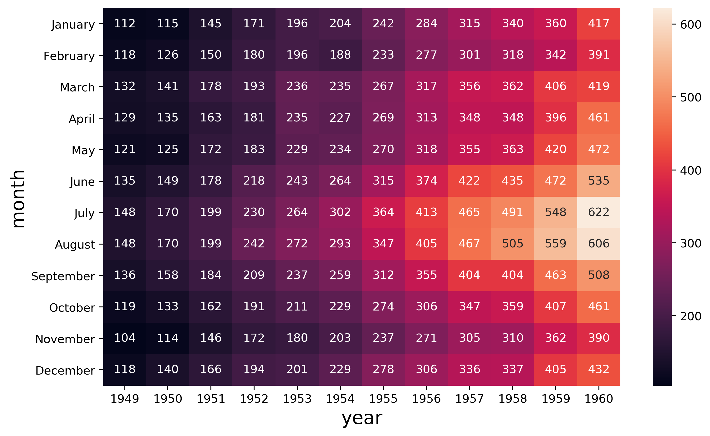